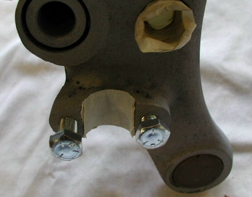
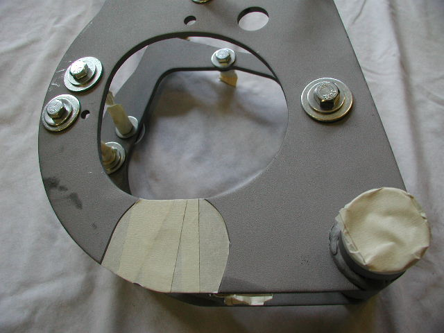

Summary:
This article covers the procedure to prepare a Commando frame and frame parts for powder coating,
instructions on what parts need to be blanked off by the powder coater and what needs to be done after you get the
parts back from the powder coater. We may not address some of the parts that you need powder coated and may include
other parts that you are not going to coat, but you will get an idea of what to do with the parts not addressed.
Please Note: With the motor being isolastically mounted in the Commando you MUST not have any powder coating between
the engine case and the engine mounts, especially the three rear engine mounts, or you will sheer the mounting bolts.
Fred did not do this on his first race bike and sheared the rear bolts, destroyed the rear PTFE washers and broke a couple of other things the
second time he hit 7,000 rpm. We have a customer who had his bike assembled prior to finding out about this problem and he tried to
go slow and kept tightening the bolts until they would quit tightening. He was not successful and also sheared the engine bolts.
All the other places that we blank off are for ease of assembly and achieving a good ground among the parts. You can spend time
blanking off the parts prior to powder coating or removing the coating prior to assembling, which is much more time consuming.
We want to thank Ken's Powder Coating for working with me in preparing this article. We took the parts to them to
sand blast, then brought the parts back to our shop so we could take pictures, which required them to sand blast
the parts again. The parts cannot be touched with bare hands after sand blasting or the oil from your hands will
mar the finish. Also the parts need to be coated fairly soon after sand blasting or they will rust.
We highly recommend Ken's if you are in the Seattle area. They know about motorcycles, are enthusiasts and provide
first-class service at a very competitive price. You can contact them at:
Ken's Powder Coating, Inc.
All parts takeen to the powder coater need to be thoroughly cleaned of all oil and grease.
The parts will need to be sand blasted by the powder coater and any oil or grease left on your parts tends to
clog up their sand blasting equipment. Also since the parts are baked in a 400 degree oven, any oil will weep out and
ruin the finish.
If you are using new parts, little if any cleanup is required. You may want to check each part to see if any oil or grease
is present and clean it off with contact cleaner. We highly recomend the PJ1 Contact Cleaner (part number 78-300001,
$11.49)
For used parts, a trip to your local pressure washer is the best way to clean off large parts. Thoroughly
check each part to make sure all crevices are clean and use contact cleaner if additional cleaning is required.
The parts we will be powder coating in this article are:
One last thing you will have to do is obtain the hardware listed in the next section so the powder coater can blank off
the parts.
There is a complete list after the next section for your convenience.
We did not powder coat the air box, since we will not be using one for this project. If you are coating your air box, use
two 1/4 x 28 bolts to blank off the threads on the back plate.
We did not powder coat the coil bracket which may require some blanking bolts, depending on your bracket (see the frame sectiion below).
If you place the hardware where you want it and take this article to your powder coater, they should not have any problems
replacing the hardware where you want it placed. NOTE: is may be better to pring this article out in landscape.
20104 78th Ave E.
Spanaway, WA 98387
(253) 847-9431
Preparations prior to delivering the parts to the powder coater:
Instruction on what needs to be blanked off by the powder coater:
For this part blank off the four 5/16 x 24 handlebar clip bolt holes, the fork lock bore, the fork tube bores, the stem and the seats for the handlebar.
This picture shows the 5/16 x 24, 1" long bolts blanking off the four handlebar clip bolt holes. We use longer bolts than would be required here so that it is easy to coat the flats between the yoke and the clamps. You could blank off the flats, but there is plenty of room between the flats when the bars are mounted, so powder coating the flats is OK. You want to thread the bolts so that they just start to penatrate through the yoke, blanking off all the threads. On the back where the threading is exposed on one side, do not thread the bolts all the way down exposing several threads of the bolt or you will have difficulty removing the bolt after powder coating.
This part, the lower yoke and the bar clips are normally silver. We particularly like black and will be coating them black, but
you may want to powder coat them silver or paint them as the factory did.
In this picture you can see how far the bolts are threaded into the top yoke.
You can have your powder coater use tapered plugs on both sides, as shown on one side, to blank off the fork bores
or have them tape it up as shown.
This is a special high temperature tape, not ordinary masking tape. The fork lock also needs plugged or taped.
Make sure that the stem is taped from just under the yoke completely to the bottom so that no coating is applied to any part of the stem.

The bar indents need to be taped as shown.
For this part blank off the two pinch bolt holes, the fork tube bores and the stem bore.
We used two 3.8 x 24, 2" long bolts to blank off the pinch bolt holes.
Again, you can tape or plug the bore holes.
The clips only need the bar indents taped.
For this part blank off the two 1/4 x 28 air box bolt holes and the two 3/8" mounting holes.
In this picture you see we are using two 1/4 x 28, 1/2" long bolts along with two 1/4" washers. The washers provide a good area around the
bolt holes clear of the powder coating. The clean area helps in assembling and provides a good
ground between the parts being bolted together, if a ground is required.
We will address keeping the bare areas from rusting in the section, "After powder coating".
Here we used two 3/8 x 24, 1 1/4" long bolts, four 3/8" washers and two 3/8 x 24 nuts to blank off the rear mounting holes.
This is the first time we show taping the extended threads of a bolt. Do this to all exposed threads.
If you can have your bolt threads and some of the nut taped, you will be able to remove the bolt with little trouble.
Again, we are using a longer bolt than required, but it allows us plenty of room for the tape.
Both sides of the center stand ends that bolt to the engine mount need to be taped off.
Both sides of the side stand ends that bolt to the frame need to be taped off.
We used two 1/4 x 28, 3/4" long bolts along with four 1/4" washers and two 1/4 x 28 nuts to blank off the 1/4" holes.
We used one 5/16 x 24, 3/4" long bolt along with two 5/16" washers and one 5/16 x 24 nut to blank off the 5/16" hole.
This is a ground point for the rear tail light if a separate ground wire is not run for the rear tail light and turn signals.
Nothing needs to be blanked for these parts.
Need to tape off the sides and bore of the swinging arm bushings bores.
The most important part that needs to be blanked off are the three rear engine mounts.
MK3 Engine Mount, part number 06-5140:
For a MK3 rear engine mount, we used six 3/8 x 24, 1 1/4" long bolts along with 12 3/8, 1" O.D. washers and six 3/8 x 24 nuts. We used the larger O.D. washers to make sure all the powder coating is removed between the mount and the crank case.
We used two 5/16 x 18, 2 1/4" long bolts along with four 5/16 washers and two 5/16 x 18 nuts to blank off the swinging arm spindle locating bolt holes.
We used four 7/16 x 20, 1 1/4" long bolts along with eight 3/8, 1" O.D. washers, eight 7/16, 1 1/4" O.D. washers and four 7/16 x 20 nuts to blank off the top gearbox mounting holes. Again, you do not need to stack washers if the correct sizes are handy.
The swinging arm bore and turning area needs to be taped off as shown. You need to tape off the isolastic bore and from 3/16" to 1/4" back from the end of the flange so the isolastic cap will fit over the flange.
We used two 7/16 x 20, 1 1/4" long bolts along with four 3/8, 1" O.D. washers, two 7/16, 1 1/4" O.D. washers and two 7/16 x 20 nuts to blank off the center stand bolt holes. The two stacked washers go on the outside of the mount and the larger diameter washer goes against the mount.
Pre-MK3 Engine Mount, part number 06-4060 or 06-6972:
For pre-MK3 engine mounts you will only use four sets of the 3/8 hardware listed above and two 5/16 x 24, 1" long bolts along with four 5/16, 1 1/4" O.D. washers, four 3/8, 1" O.D. washer and two 5/16 x 24 nuts. You will stack the washers with the larger washer next to the engine mount. You could use one large diameter washer instead of stacking the washers, but since we did not have a cheap large diameter 3/8 washer in stock and are trying to keep the hardware cost down, we used what we had on hand. The idea is to blank off around 1 1/4".
We use a 1/4 x 28, 1" long bolt to blank off the spindle locating bolt hole. A shorter bolt would work, but this bolt is used else ware and we use it for simplicity.
To blank off the top gearbox mounting slots we used to use blanking plates, but have found that taping them is a less expensive way.
The swinging arm bore and turning area needs to be taped off as shown. You need to tape off the isolastic bore and from 3/16" to 1/4" back from the end of the flange so the isolastic cap will fit over the flange.
We used two 7/16 x 20, 1 1/4" long bolts along with four 3/8, 1" O.D. washers, two 7/16, 1 1/4" O.D. washers and two 7/16 x 20 nuts to blank off the center stand bolt holes. The two stacked washers go on the outside of the mount and the larger diameter washer goes against the mount.

You need to tape off the isolastic bore and from 3/16" to 1/4" back from the end of the flange so the isolastic cap will fit over
the flange.
We used four 3/8 x 24, 1 1/4" long bolts along with eight 3/8" washers and four 3/8 x 24 nuts to blank off the four mounting holes.
Both of the side surfaces where the axle passes through this mountand need to be taped off which will also covering up the axle bore .
We used two 3/8 x 24, 1 1/4" long bolts along with two 3/8" washers (normal O.D.), two 3/8" washers (1" O.D.) and two 3/8 x 24 nuts.
The standard O.D. washers go on the side facing out (the side pictured here) and the 1" O.D. washer go on the side facing in
where the caliper bolt to this mount. We have the washers reversed in this series of pictures. "do as we say not as we do."
The 1" O.D. washers should go on this side, even though we have them reversed in these pictures.
Remove the I.D. plate from the fork stem. We do this with a cold chisel by sheering off the head of the rivet. This will usually mess up the plate, but we normally install a new plate with newly stamped numbers. If you do not want to replace your I.D. plate, you can drill out the heads of the rivets. After the heads of the rivets are removed, you can take a small punch and push the rivet stems through the fork stem.
Tape the bearing bores on the fork stem. We used four 5/16 x 24, 3/4" long bolts along with 8 5/15 washers and 4 5/16 x 24 nuts to blank off the coil bracket mounting holes. This is a frame ground point for some Commandos.
We are not powder coating the coil bracket (part number 06-2577). If you are coating yours, blank off the corresponding
mounting holes on the bracket so you have a good ground. If your coil bracket has threaded coil mounting holes along with threaded
bracket mounting holes, you will need to add eight 1/4 x 28, 3/4" long bolts to your hardware list.
We used two 5/16 x 24, 3/4" long bolts to blank off the head steady bolt holes.
We used two 7/16 x 20, 1 1/4" long bolts along with four 7/16 washers and two 7/16 x 20 nuts to blank off the front frame engine mounting lugs.
 We used two 3/8 x 24, 1 1/4" long bolts along with four 3/8 washers and two 3/8 x 24 nuts to blank off the battery box bolt hole.
We used two 7/16 x 20, 1 1/4" long bolts along with four 7/16 washers and two 7/16 x 20 nuts for the rear frame engine mount lugs.
We used two 3/8 x 24, 1 1/4" long bolts along with four 3/8 washers and two 3/8 x 24 nuts to blank off the battery box bolt hole.
We used two 7/16 x 20, 1 1/4" long bolts along with four 7/16 washers and two 7/16 x 20 nuts for the rear frame engine mount lugs.
We used one 3/8 x 24, 1 1/4" long bolt along with two 3/8 washers and one 3/8 x 24 nut for the dzus or ground point for MK3s.
We used two 1/4 x 28, 3/4" long bolts along with four 1/4 washers and two 1/4 x 28 nuts for the rear fender mounting bracket holes.
This is a ground point for the rear tail light if a separate ground wire is not run for the rear tail light and turn signals.
This is a list of all the hardware we used to blank off the parts in this article. Depending on your parts, you may require a slightly different hardware list. We selected hardware that we buy in bulk and had plenty in stock so your thread count and lengths could very greatly and still accomplish the job. The idea is to blank off the required areas for as cheaply as possible, since most of the hardware is not reusable with the powder coating on it, unless you or a friend are going to do another frame. We have listed our part numbers in parenthesis and we can provide you with this hardware if you desire. We added the extra hardware that you might require if you did powder coat your coil bracket, air box and if you are using a pre-MK3 rear engine mount.
MK3 Hardware List:
Pre-MK3 Hardware List:
The price for the MK3 Powder Coating Blanking Hardware Kit (part # 13-900900) is $82.63.
The price for the Pre-MK3 Powder Coating Blanking Hardware Kit (part # 13-900902) is $78.52.
We take each piece and remove any tape and all the hardware, being very careful not to damage the powder coat. We do not know if the powder coating hardens with time, but that is my experience and other people have also mentioned this experience. We give each piece at least one good coat of paste wax like Mothers Carnauba Cleaner Paste Wax (part number 78-500003 $17.80) which protects the coating. We remove the hardware from one piece and wax that piece before we procede on to another piece. We then set that piece somewhere where it will not be banged around.
Comment: An idea that we picked up from a friend some years back is to place an old bath towel on your work bench when you are working
with parts on your bench. The towel provides a soft clean place to work and things, like a nut, will not bounce off as they would on a
wooden top. If you do not let the towel get too oily, you can throw it in the wash with your shop rags.
This worked out so well Fred bought two sets of new towels to cover his complete work bench. If you watch for a sale on bath
towels you can pick them up fairly cheap.
When we are working with an oily project, we place that project on a metal tray and after all the parts are clean, we then can place them on top
of the towels.
After we have removed all the hardware and applied at least one coat of wax to all parts, we try to paint the bare spots as soon as possible. If you waxed the bare spots, which is hard not to do, that will protect the bare spots for some time, but the sooner you can get them painted the better.
The first step in painting is to remove any wax, residual tape and oil from your hands from handling the piece.
We use PJ1 contact cleaner and spray a bit on a shop rag (do not spray it directly on the piece) and carefully clean the bare spot.
PJ1 is a powerful cleaner and we do not want it contacting the powder coat until we have several coats of wax and the coating has had
a chance to age.
Normal restorations or building projects take some time, which allows the coating age.
Fred uses PJ1 directly on his race bike and it does not discolor the powder coating, but it has sufficiently aged and he try to wax any
part that he does spray.
We use a rust inhibitor paint and a small brush to coat the bare spots. A light coat is all that is required.
For the spots where you need a good ground, clean the sopt like it was going to be painted then rub some Penetrant Lubricant (like PJ1 12-11,
part number 78-200201
$12.31)
on the spot.
We will give that spot another coat of Penetrant Lubricant just prior to assembling.
After all parts are painted and have dried thoroughly, give them another good coat of paste wax. It may seem that there is alot of waxing, but it is easier to wax a part off the bike than on the bike and the more wax you have on a part, the less likely it will chip when the accidental bolt bouncing of the coating.
This page was written and designed by F. H. Eaton & Associates. If you have any questions or comments, please contact us at info@fheaton.com